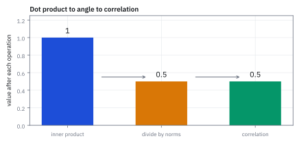
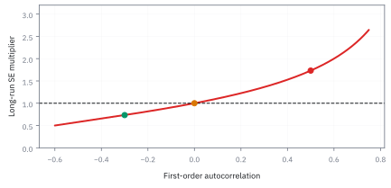

3.5 Hypothesis Testing and Sharpe-Ratio Inference
การทดสอบถามว่า “ถ้าไม่มี edge เลย ข้อมูลแบบนี้หายากแค่ไหน” และ Sharpe ratio ของข้อมูลอิสระก็คือสถิติ t ที่หารด้วยรากของจำนวนปี
ทีมวิจัยของกองทุนคิดกฎการเทรดขึ้นมาชุดหนึ่ง (เป็นกลยุทธ์สมมติ) แล้วลองใช้กฎนั้นกับข้อมูลราคาย้อนหลังสามปี การลองแบบนี้เรียกว่า backtest คือถามว่า “ถ้าเราเทรดตามกฎนี้ตลอดสามปีที่ผ่านมา จะได้ผลเท่าไร” ผลออกมาดี ทีมจึงมาขอเงินจริงไปลงทุน และคุณเป็นคนเซ็นอนุมัติ
ทีมวัดผลด้วย Sharpe ratio คือกำไรเฉลี่ยต่อปีส่วนที่ได้เกินดอกเบี้ยที่ได้แน่นอน (เช่นเงินฝาก) หารด้วยความผันผวนของกำไรนั้น มันบอกว่าได้ผลตอบแทนเท่าไรต่อการแกว่งหนึ่งหน่วย นักลงทุนจำนวนมากถือว่า Sharpe เกิน 1 ก็ดีพอแล้ว
ผลที่ทีมส่งมา:
- ระยะเวลาที่ลอง $T=3$ ปี
- Sharpe ratio รายปีหลังหักต้นทุนการเทรด $\widehat{\mathrm{SR}}=1.20$ หมวกที่อยู่บน $\mathrm{SR}$ แปลว่าเป็นค่าที่คำนวณจากข้อมูล ไม่ใช่ค่าจริงที่เราไม่รู้
ทีมจึงคิดว่าผ่านแน่ แต่กลยุทธ์ที่ไม่มีอะไรดีเลยก็อาจได้กำไรสามปีเพราะโชค คำถามคือ หลักฐานนี้แข็งแค่ไหน และคุณควรถามอะไรก่อนเซ็น
ลองตอบก่อนเปิดเฉลย
ถามก่อนว่า Sharpe นี้คำนวณจากผลตอบแทนรายวัน รายเดือน หรือรายปี เพราะคำตอบเปลี่ยนตามนั้น ตัวเลขด้านล่างทุกตัว หน้านี้จะคำนวณให้ดูทีละขั้น
- สถิติทดสอบ (ตัวเลขที่บอกว่าผลอยู่ห่างจาก “ไม่มีฝีมือเลย” กี่เท่าของความคลาดปกติ) คือ $1.20\times\sqrt3\approx2.08$
- ถ้าเป็นผลตอบแทนรายวัน (ตลาดหุ้นสหรัฐฯ เปิดราว 252 วันต่อปี) ข้อมูลมี $252\times3=756$ วัน โอกาสที่กลยุทธ์ไร้ฝีมือจะได้ผลดีขนาดนี้เพราะโชค (เรียกว่า p-value) คือราว 3.8% ต่ำกว่าเกณฑ์ 5% ที่นิยมใช้ไปนิดเดียว
- ถ้ามีแค่ผลตอบแทนรายปีสามตัว p-value จะเป็นราว 17.3% ไม่ผ่านเกณฑ์
- ต่อให้ Sharpe จริงคือ 1.20 การทดสอบสามปีก็จับได้เพียงราว 55% ของครั้ง
- Sharpe ที่คำนวณได้มักคลาดจากค่าจริงราว 0.58 (เรียกว่า SE) ช่วงที่น่าจะครอบค่าจริงได้ 95% คือ $1.20\pm1.96\times0.578=1.20\pm1.13$ หรือราว 0.07 ถึง 2.33 โดย 1.96 คือระยะ (นับเป็นจำนวน SE) ที่ครอบ 95% ของรูประฆัง normal
สรุปว่าหลักฐานยังบางมาก
ภาพรวมก่อนลงสูตร
ปัญหาของ backtest คือ กลยุทธ์ที่ไม่มีอะไรดีเลยก็ทำกำไรสามปีได้เพราะโชค เราจึงต้องมีวิธีแยก “ฝีมือ” ออกจาก “โชค” คนในวงการเรียกฝีมือแบบนี้ว่า edge คือความได้เปรียบจริงที่ทำให้กำไรเฉลี่ยของกลยุทธ์มากกว่าศูนย์ ไม่ใช่กำไรที่บังเอิญได้
วิธีที่ใช้คือการทดสอบสมมติฐาน (hypothesis testing) หน้าที่แล้ว confidence interval ถามว่า “ค่าจริงน่าจะอยู่ช่วงไหน” หน้านี้ถามกลับด้าน และทำเป็นสามจังหวะ:
- สมมติโลกหนึ่งขึ้นมาก่อน เช่น “กลยุทธ์ไม่มี edge เลย กำไรที่เห็นเป็นโชคล้วน ๆ”
- คำนวณว่าในโลกนั้น ผลที่ดีอย่างน้อยเท่าที่เห็นจะเกิดบ่อยแค่ไหน ตัวเลขนี้เรียกว่า p-value
- ถ้า p-value เล็กมาก แปลว่าโลกที่สมมติอธิบายข้อมูลได้ยาก เราจึงไม่เชื่อโลกนั้น
สำหรับกลยุทธ์ เครื่องมือหลักคือ Sharpe ratio หน้านี้จะแสดงว่า ถ้าผลตอบแทนแต่ละงวดไม่ขึ้นต่อกัน Sharpe ที่คำนวณได้ก็คือสถิติทดสอบตัวเดียวกัน แค่หารด้วย $\sqrt T$ โดย $T$ คือจำนวนปีของข้อมูล หลักฐานจึงโตตาม $\sqrt T$ ข้อมูลยาวขึ้นสี่เท่าให้หลักฐานเพิ่มแค่ $\sqrt4=2$ เท่า
หน้านี้ตอบสามคำถามแยกกัน:
- ถ้าไม่มี edge ข้อมูลแบบนี้น่าประหลาดใจแค่ไหน (p-value)
- ถ้ามี edge จริง การทดสอบจะจับได้บ่อยแค่ไหน (power)
- เรารู้ค่า Sharpe แม่นแค่ไหน (SE ย่อมาจาก standard error คือขนาดที่ค่าประมาณมักคลาดจากค่าจริง)
เราเริ่มจากตัวอย่างที่นับด้วยมือได้ คือผู้จัดการกองทุนที่ชนะตลาดเก้าในสิบปี จากนั้นจึงไปที่ Sharpe การเลือกความถี่ของข้อมูล power ความแม่นของ Sharpe ขอบเขตของโอกาสขาดทุนที่ไม่ต้องสมมติว่าผลตอบแทนเป็น normal และสุดท้ายคือกรณีที่ผลตอบแทนงวดติดกันสัมพันธ์กัน
รูป — จำนวนปีที่ชนะตลาดของผู้จัดการที่ไม่มีฝีมือ
ศัพท์ที่ใช้ในหน้านี้
- Backtest
- การลองใช้กฎของกลยุทธ์กับข้อมูลราคาย้อนหลัง เพื่อดูว่าถ้าใช้กฎนี้ในอดีต จะได้กำไรหรือขาดทุนเท่าไร
- Edge
- ความได้เปรียบจริงที่ทำให้กำไรเฉลี่ยของกลยุทธ์มากกว่าศูนย์ ไม่ใช่กำไรที่ได้เพราะโชค
- Null hypothesis $H_0$
- โลกสมมติที่ใช้เป็นจุดอ้างอิง มักเป็น “ไม่มี edge” เราใช้มันคำนวณว่า ถ้าไม่มีอะไรพิเศษเลย ข้อมูลแบบที่เห็นควรเกิดบ่อยแค่ไหน
- Alternative $H_1$
- สิ่งที่เราเชื่อถ้า $H_0$ ไม่จริง ต้องเลือกไว้ก่อนเห็นข้อมูลว่าจะทดสอบด้านเดียว (สนใจแค่ค่าเฉลี่ยมากกว่าศูนย์) หรือสองด้าน (สนใจทั้งมากกว่าและน้อยกว่าศูนย์)
- p-value
- โอกาสที่สถิติจะสุดโต่งอย่างน้อยเท่าที่เห็น ถ้า $H_0$ จริง มันวัดว่าข้อมูลขัดกับ $H_0$ แค่ไหน มันไม่ใช่โอกาสที่ $H_0$ จริง
- ระดับนัยสำคัญ $\alpha$
- เกณฑ์ที่ตั้งไว้ก่อน เช่น 5% ถ้า p-value ไม่เกิน $\alpha$ เราปฏิเสธ $H_0$ ดังนั้นเมื่อ $H_0$ จริง เราจะปฏิเสธผิด $\alpha$ ของครั้ง และนี่คืออัตราที่เรายอมรับได้
- Power
- โอกาสที่การทดสอบจะปฏิเสธ $H_0$ ได้ เมื่อ edge มีอยู่จริงในขนาดที่กำหนด ใช้วางแผนว่าต้องเก็บข้อมูลนานแค่ไหน
- Sharpe ratio
- ผลตอบแทนส่วนเกินเฉลี่ย หารด้วย SD ของผลตอบแทนส่วนเกิน ในงวดเดียวกัน ผลตอบแทนส่วนเกินคือส่วนที่ได้เกินอัตราไร้ความเสี่ยง (ดอกเบี้ยที่ได้แน่นอน เช่นพันธบัตรรัฐบาลระยะสั้น) Sharpe จึงบอกว่าได้ผลตอบแทนเท่าไรต่อความผันผวนหนึ่งหน่วย
- Standard error (SE)
- SD ของค่าประมาณ บอกว่าตัวเลขที่คำนวณจากข้อมูลมักคลาดจากค่าจริงราวเท่าไร หน้า estimator และ standard error อธิบายเต็ม
- Autocorrelation
- correlation ระหว่างผลตอบแทนงวดหนึ่งกับงวดก่อนหน้า ถ้าเป็นบวก งวดที่ดีมักตามด้วยงวดที่ดี
สัญลักษณ์และหน่วย
| สัญลักษณ์ | ความหมาย | หน่วย |
|---|---|---|
| $q$ | จำนวนงวดต่อปี (252 รายวัน, 12 รายเดือน, 1 รายปี) | งวดต่อปี |
| $n,\ T$ | จำนวนงวดที่มี และจำนวนปี $T=n/q$ | งวด, ปี |
| $r_i$ | ผลตอบแทนส่วนเกินหลังหักต้นทุน ของงวดที่ $i$ | ต่องวด |
| $\mu,\ \sigma$ | ค่าเฉลี่ยจริงและ SD จริงของ $r_i$ ซึ่งเราไม่รู้ | ต่องวด |
| $\bar r,\ \hat\sigma$ | ค่าเฉลี่ยและ SD ที่คำนวณจากข้อมูล | ต่องวด |
| $s,\ \hat s$ | Sharpe ต่องวด ค่าจริง $s=\mu/\sigma$ และค่าที่คำนวณได้ $\hat s=\bar r/\hat\sigma$ | ต่อรากที่สองของงวด |
| $\widehat{\mathrm{SR}}$ | Sharpe รายปีที่คำนวณได้ $\sqrt q\,\hat s$ | ต่อรากที่สองของปี |
| $t,\ \delta$ | สถิติทดสอบ และค่าเฉลี่ยของมันเมื่อ edge มีอยู่จริง | จำนวน SE |
| $\Phi(z)$ | โอกาสที่ค่าจาก normal มาตรฐาน (ค่าเฉลี่ย 0, SD 1) จะไม่เกิน $z$ | ไม่มีหน่วย |
| $\rho$ | autocorrelation ระหว่างงวดที่ติดกัน | ไม่มีหน่วย |
ขั้นที่ 1 — ผู้จัดการที่ชนะตลาดเก้าในสิบปี
ก่อนถึงเรื่อง Sharpe ลองดูการทดสอบที่ง่ายที่สุดก่อน ตัวอย่างนี้นับด้วยมือได้ทั้งหมด จึงเห็นโครงของการทดสอบชัดเจน
โจทย์ให้อะไรมาบ้าง: ผู้จัดการกองทุนคนหนึ่งบอกว่าตัวเองมีฝีมือ จึงควรเก็บค่าธรรมเนียมสูง หลักฐานของเขาคือ ในสิบปีที่ผ่านมา เขาชนะตลาดเก้าปี “ชนะตลาด” แปลว่าผลตอบแทนทั้งปีของกองทุนสูงกว่าดัชนีตลาด หลังปรับเรื่องความเสี่ยงแล้ว (เป็นตัวอย่างสมมติ)
เราตั้งโลกสมมติ $H_0$ ว่าเขาไม่มีฝีมือ:
- แต่ละปีเขาชนะด้วยโอกาส $p=1/2$ เหมือนโยนเหรียญ
- ผลของแต่ละปีไม่ขึ้นต่อกัน
- ให้ $X$ เป็นจำนวนปีที่ชนะจากสิบปี
คำถามคือ ในโลกนี้ โอกาสที่จะชนะอย่างน้อยเก้าปีเป็นเท่าไร เรานับ “อย่างน้อยเก้า” ไม่ใช่ “เก้าพอดี” เพราะเราอยากรู้ว่าผลที่ดีเท่านี้หรือดีกว่าหายากแค่ไหน และเรานับแค่ฝั่งที่ชนะมาก เพราะสนใจแค่ฝีมือดี แบบนี้เรียกว่าการทดสอบด้านเดียว
สูตร binomial คิดแบบนี้: ลำดับผลสิบปีแบบหนึ่ง เช่น ชนะ ชนะ แพ้ ชนะ … มีโอกาส $(1/2)^{10}=1/1{,}024$ เพราะแต่ละปีมีโอกาสครึ่งหนึ่งและไม่ขึ้นต่อกัน ส่วน $\binom{10}{k}$ นับว่ามีลำดับกี่แบบที่ชนะ $k$ ปี
คำตอบ: $\binom{10}{9}=10$ เพราะปีที่แพ้ปีเดียวเลือกได้ 10 แบบ และ $\binom{10}{10}=1$ คือชนะหมดทุกปี ถ้าเขาไม่มีฝีมือ ประวัติที่ดีเท่านี้หรือดีกว่าจะเกิดเพียง 1.07% ของครั้ง ค่านี้ต่ำกว่าเกณฑ์ 5% ที่นิยมใช้ เราจึงปฏิเสธโลกไร้ฝีมือ
แต่ระวัง ถ้าเขาเป็นคนที่เก่งที่สุดจากผู้จัดการ 20 คน คำถามจะเปลี่ยนไปทันที เพราะถ้ามีผู้จัดการไร้ฝีมือ 20 คน โอกาสที่จะมีสักคนชนะเก้าปีขึ้นไปสูงกว่า 1.07% มาก หน้า ปัญหาการทดสอบหลายครั้ง จะคำนวณว่าตัวเลขนี้กลายเป็นราว 19%
ตรวจเองใน 10 วินาที: $2^{10}=1{,}024$ และ $10+1=11$ ได้ $11/1{,}024\approx0.0107$
ขั้นที่ 2 — ล็อกคำถามก่อนคำนวณ
ตัวอย่างผู้จัดการมีโครงที่ใช้ได้กับทุกการทดสอบ ก่อนไปที่ Sharpe เราเขียนโครงนี้เป็นสูตรทั่วไปก่อน กฎสำคัญคือ ต้องตั้งสี่อย่างนี้ไว้ก่อนเห็นข้อมูล:
- โลกอ้างอิง $H_0$ เช่น ค่าเฉลี่ยจริงของผลตอบแทนส่วนเกิน $\mu=0$ คือไม่มี edge
- ทางเลือก $H_1$ เช่น $\mu\ne0$
- ด้านที่ทดสอบ คือด้านเดียวหรือสองด้าน
- เกณฑ์ $\alpha$ เช่น 5%
จากนั้นจึงคำนวณสถิติทดสอบจากข้อมูล เรียกว่า $t_{\rm obs}$ (obs ย่อมาจาก observed คือค่าที่เห็นจริง) แล้วหา p-value ในสูตรข้างล่าง $P_{H_0}$ คือโอกาสที่คิดในโลก $H_0$ และ $\beta$ คือโอกาสที่เราไม่ปฏิเสธ $H_0$ ทั้งที่ $H_1$ จริง
p-value วัดว่าข้อมูลน่าประหลาดใจแค่ไหน ถ้าโลก $H_0$ เป็นจริง มันไม่ได้วัดว่า $H_0$ น่าจะจริงแค่ไหน สูตร p ใช้ค่าสัมบูรณ์ $|t|$ เพราะ $H_1:\mu\ne0$ สนใจทั้งกำไรและขาดทุนที่ผิดปกติ จึงนับทั้งสองหาง แบบนี้เรียกว่าการทดสอบสองด้าน กฎตัดสินคือ ปฏิเสธ $H_0$ เมื่อ $p\le\alpha$
ทำไม $P_{H_0}(p\le\alpha)=\alpha$ เพราะ $p\le\alpha$ เกิดขึ้นพอดีเมื่อ $|t|$ เกินจุดตัดที่มีพื้นที่หางรวมกัน $\alpha$ ในโลก $H_0$ เช่น ที่ $\alpha=5\%$ จุดตัดของ normal คือ 1.96 ดังนั้นในโลก $H_0$ กฎนี้ปฏิเสธผิด $\alpha$ ของครั้งพอดี ความผิดแบบนี้เรียกว่า false positive ความผิดอีกแบบคือไม่ปฏิเสธทั้งที่มี edge จริง เรียกว่า false negative เกิดด้วยโอกาส $\beta$ ส่วน $1-\beta$ คือ power
ถ้าตั้งใจไว้ก่อนว่าจะทดสอบแค่ด้านบวก p ของสถิติที่เป็นบวกจะเหลือราวครึ่งหนึ่ง เพราะนับแค่หางเดียว แต่ห้ามสลับเป็นด้านเดียวหลังเห็นผล เพราะเท่ากับให้ตัวเองโอกาสผ่านสองเท่า
การไม่ปฏิเสธ $H_0$ ไม่ได้ยืนยันว่า $H_0$ จริง อาจแค่ข้อมูลน้อยเกินไป การปฏิเสธก็ไม่ได้บอกว่า edge ใหญ่พอคุ้มต้นทุน และ p = 0.03 ไม่ได้แปลว่ามีโอกาส 97% ที่กลยุทธ์ดีจริง การแปลงเป็นโอกาสแบบนั้นต้องใช้ Bayes’ theorem และต้องรู้ว่าตั้งแต่แรก ไอเดียที่ทีมคิดมาดีจริงกี่ส่วน หน้า ปัญหาการทดสอบหลายครั้ง คำนวณให้ดู
ขั้นที่ 3 — Sharpe ที่คำนวณได้คือสถิติ t หารด้วย √T
กลับมาที่ backtest ของทีมวิจัย เราอยากใช้โครงจากขั้นก่อนกับ $H_0:\mu=0$ (ไม่มี edge) จึงต้องเขียนสถิติทดสอบให้อยู่ในรูปของ Sharpe ก่อน ของที่ใช้:
- $r_i$ คือผลตอบแทนส่วนเกินหลังหักต้นทุน ของงวดที่ $i$ (งวดหนึ่งอาจเป็นวัน เดือน หรือปี)
- $n$ คือจำนวนงวดที่มี
- $q$ คือจำนวนงวดต่อปี เช่น 252 สำหรับรายวัน ดังนั้นจำนวนปีคือ $T=n/q$
- $\bar r$ และ $\hat\sigma$ คือค่าเฉลี่ยและ SD ของ $r_i$ ที่คำนวณจากข้อมูล Sharpe ต่องวดจึงเป็น $\hat s=\bar r/\hat\sigma$
สถิติ $t$ ของการทดสอบค่าเฉลี่ยศูนย์ คือค่าเฉลี่ยหารด้วย SE ของค่าเฉลี่ย และ SE ของค่าเฉลี่ยคือ $\hat\sigma/\sqrt n$ (จากหน้า estimator และ standard error) ส่วน Sharpe รายปีได้จากการคูณ Sharpe ต่องวดด้วย $\sqrt q$ เพราะในหนึ่งปี ผลตอบแทนเฉลี่ยโตตามจำนวนงวด $q$ แต่ SD โตแค่ $\sqrt q$ เมื่องวดไม่ขึ้นต่อกัน อัตราส่วนจึงโต $q/\sqrt q=\sqrt q$
ข้อสรุปคือ ถ้าผลตอบแทนแต่ละงวดไม่ขึ้นต่อกันและมาจากการแจกแจงเดียวกัน Sharpe รายปีที่คำนวณได้กับสถิติ $t$ คือของชิ้นเดียวกัน ต่างกันแค่ตัวคูณ $\sqrt T$ จังหวะสำคัญคือ $\sqrt n=\sqrt q\,\sqrt T$ เพราะ $n=qT$ ส่วน $\sqrt q$ ไปรวมกับ $\hat s$ กลายเป็น Sharpe รายปี ที่เหลือคือ $\sqrt T$ แทนตัวเลขของทีมได้ $1.20\times\sqrt3\approx2.0785$
ตัวเลข 2.0785 จึงออกมาเท่ากันไม่ว่าข้อมูลจะเป็นรายวัน รายเดือน หรือรายปี เพราะมันขึ้นกับ Sharpe รายปีและจำนวนปีเท่านั้น แต่สิ่งที่เอามาเทียบไม่เท่ากัน เพราะ SD $\hat\sigma$ ก็ประมาณมาจากข้อมูลเหมือนกัน ถ้าผลตอบแทนเป็น normal และ $H_0$ จริง สถิตินี้มีการแจกแจงแบบ Student $t$ ที่มี df (degrees of freedom) เท่ากับ $n-1$ ไม่ใช่ $T-1$ ยิ่ง df น้อย SD ที่ประมาณมายิ่งไม่แน่นอน การแจกแจงจึงมีหางหนากว่า normal
ตารางนี้คิด p สองด้านจากสถิติ 2.0785 ตัวเดียวกัน กับสามความถี่ จำนวนข้อมูลคือ $n=qT$ เช่น รายวัน $252\times3=756$ ตัว และ df $=n-1=755$ ค่า p คำนวณด้วยโค้ดท้ายหน้า
| ความถี่ | จำนวนข้อมูล / df | p สองด้าน | ที่เกณฑ์ 5% |
|---|---|---|---|
| รายวัน $q=252$ | 756 / 755 | ราว 3.80% | ปฏิเสธแบบเฉียด |
| รายเดือน $q=12$ | 36 / 35 | ราว 4.51% | ปฏิเสธแบบเฉียด |
| รายปี $q=1$ | 3 / 2 | ราว 17.32% | ไม่ปฏิเสธ |
สามแถวคือชุดข้อมูลสมมติที่ Sharpe รายปีเท่ากัน ตารางนี้ไม่ได้แนะนำให้เลือกความถี่ที่ได้ p ถูกใจ มันแสดงว่าข้อมูลรายปีสามตัวทำให้ SD ที่ประมาณได้ไม่แน่นอนมาก Student $t$ ที่ df 2 จึงหางหนามาก ส่วน 12 คือจำนวนเดือนต่อปี และ 252 คือจำนวนวันที่ตลาดหุ้นสหรัฐฯ เปิดในหนึ่งปีตามปกติ เช่นปี 2024 มี 366 วัน หักเสาร์อาทิตย์ 104 วัน และวันหยุดตลาด 10 วัน ได้ $366-104-10=252$ วัน (ที่มาเต็มอยู่ในหน้า random variable และ CDF)
ขั้นที่ 4 — ประมาณด้วย normal และเส้นผ่านของ Sharpe
การหา p จาก Student $t$ ต้องใช้โค้ด แต่เมื่อมีข้อมูลรายวันหลายร้อยตัว (df 755) Student $t$ แทบเป็น normal เราจึงใช้ $\Phi$ ของ normal คำนวณง่าย ๆ ได้ แล้วกลับด้านไปตอบคำถามที่ทีมชอบถาม: Sharpe ต้องสูงเท่าไรจึงจะผ่านเกณฑ์
ตัวเลข 1.96 ที่ใช้เป็นเกณฑ์ คือจุดที่หางสองข้างของ normal รวมกันได้ 5% พอดี: $2\big[1-\Phi(1.96)\big]=2\times0.025=5\%$
p คูณ 2 เพราะเป็นการทดสอบสองด้าน นับทั้งหางบวกและหางลบ ซึ่งเท่ากันเพราะ normal สมมาตร หางเดียวคือ $1-\Phi(2.0785)\approx1.88\%$ ตัวเลขนี้ใช้ได้เฉพาะเมื่อตั้งใจทดสอบด้านเดียวไว้ก่อนเห็นข้อมูล
เส้นผ่านมาจากการกลับด้านกฎ: ผ่านเมื่อ $\widehat{\mathrm{SR}}\sqrt T\ge1.96$ แล้วหารทั้งสองข้างด้วย $\sqrt T$ เส้นผ่านจึงลดลงตาม $1/\sqrt T$ สามปีต้องเกิน 1.13 สิบปีต้องเกิน $1.96/\sqrt{10}\approx0.62$ Sharpe ของทีมสูงกว่าเส้นสามปีเพียง $1.20-1.13=0.07$ หลักฐานจึงบางมาก
การประมาณด้วย normal ให้ 3.77% ใกล้กับ 3.80% จาก Student $t$ ที่ df 755 แต่ห่างจาก 17.32% ของ df 2 มาก ถ้ามีแค่ผลตอบแทนรายปีสามตัว ห้ามใช้ normal
รูป — สถิติ 2.08 บนโค้งอ้างอิงของโลกไร้ edge
ขั้นที่ 5 — Power: ถ้า edge มีจริง เราจะเห็นมันบ่อยแค่ไหน
p-value ถามถึงโลกที่ไม่มี edge แต่ทีมวิจัยเชื่อว่ากลยุทธ์มี edge จริง คำถามที่ควรถามต่อคือ ถ้า edge มีจริง การทดสอบสามปีจะจับได้บ่อยแค่ไหน ตัวเลขนี้คือ power
สมมติว่า Sharpe จริงต่อปีคือ $S$ (ไม่ใช่ศูนย์) จากขั้นที่ 3 สถิติทดสอบคือ Sharpe คูณ $\sqrt T$ ถ้าข้อมูลมากพอจนประมาณ SD ได้แม่น สถิติ $t$ จะเป็น normal ที่มีค่าเฉลี่ย $\delta=S\sqrt T$ และ SD เท่ากับ 1 เขียนได้ว่า $t=\delta+Z$ โดย $Z$ เป็น normal มาตรฐาน การทดสอบปฏิเสธ $H_0$ เมื่อ $t$ ออกนอกช่วง ±1.96 power จึงเป็นโอกาสที่ $t$ ออกไปนอกช่วงนั้น
จังหวะที่หลายคนสะดุดคือการเปลี่ยนโอกาสให้อยู่ในรูป $\Phi$ เริ่มจาก $t=\delta+Z$ จึงได้ $P(t\gt1.96)=P(Z\gt1.96-\delta)$ จากนั้นใช้ความสมมาตรของ normal: โอกาสที่ $Z$ เกินค่าหนึ่ง เท่ากับโอกาสที่ $Z$ ต่ำกว่าค่าลบของค่านั้น จึงได้ $P(Z\lt\delta-1.96)=\Phi(\delta-1.96)$ หางลบคิดแบบเดียวกัน ได้ $\Phi(-\delta-1.96)$ ซึ่งเล็กมากเมื่อ $\delta$ เป็นบวก
ความหมายคือ ถ้ากลยุทธ์ดีจริงระดับ Sharpe 1.2 การทดสอบสามปีจะจับได้แค่ครึ่งหนึ่งเศษ เพราะสถิติแกว่งรอบ 2.08 ซึ่งอยู่ติดเกณฑ์ 1.96 เกือบครึ่งหนึ่งของครั้ง สถิติจึงตกต่ำกว่าเกณฑ์
ทีมที่วางแผน backtest จึงกลับด้านคำถาม: ต้องเก็บข้อมูลกี่ปีจึงมี power 80% ตามที่นิยมใช้ ถ้าไม่นับหางลบ ต้องให้ $\Phi(\delta-1.96)=0.80$ และจุดที่ $\Phi(z)=0.80$ คือ $z\approx0.8416$ (quantile 80% ของ normal) ดังนั้น
กลยุทธ์ Sharpe 1.2 ต้องใช้ข้อมูลราว 5.45 ปี ไม่ใช่สาม เพราะ $T$ อยู่ในรูปกำลังสอง Sharpe ที่เล็กลงครึ่งหนึ่งจึงต้องใช้เวลานานขึ้นสี่เท่า ผู้จัดการกองทุนที่วัดผลเทียบดัชนี มักวัดด้วย IR (information ratio) คือผลตอบแทนส่วนที่ชนะดัชนีเฉลี่ย หารด้วยความผันผวนของส่วนนั้น ใช้สูตรเดียวกับ Sharpe ผู้จัดการที่มี IR 0.5 ซึ่งถือว่าเป็นระดับดี ต้องใช้ $(2.8016/0.5)^2\approx31.4$ ปี ถ้ามีข้อมูล 16 ปี ค่าเฉลี่ยของสถิติคือ $\delta=0.5\sqrt{16}=2$ พอดี แต่ power มีแค่ $\Phi(2-1.96)=\Phi(0.04)\approx51.6\%$
สูตรนี้เป็นการประมาณเมื่อข้อมูลมาก ถ้าข้อมูลน้อยจนต้องนับความไม่แน่นอนของ SD ด้วย power ที่แม่นต้องใช้ noncentral $t$ คือ Student $t$ ที่เลื่อนศูนย์กลางไปอยู่ที่ $\delta$
รูป — โลกไร้ edge กับโลกที่ Sharpe จริงคือ 1.2
ขั้นที่ 6 — Sharpe แม่นแค่ไหน: SE และช่วงของ Sharpe
ขั้นก่อน ๆ ถามว่า Sharpe ต่างจากศูนย์ไหม แต่ทีมยังอยากรู้อีกเรื่อง: ค่า 1.20 นี้คลาดจากค่าจริงได้แค่ไหน Sharpe เป็นอัตราส่วนของสองค่าที่ประมาณมาจากข้อมูลทั้งคู่ คือค่าเฉลี่ย $\bar r$ และ SD $\hat\sigma$ ทั้งสองค่าคลาดได้ เราจึงต้องรวมความคลาดของทั้งคู่
ให้ $s=\mu/\sigma$ เป็น Sharpe จริงต่องวด และ $\hat s=\bar r/\hat\sigma$ เป็นค่าที่คำนวณได้ เครื่องมือที่ใช้คือ delta method: ถ้าค่าประมาณคลาดจากค่าจริงไม่มาก ฟังก์ชันของมันประมาณเป็นเส้นตรงได้ (Taylor อันดับหนึ่ง) ความคลาดของ $\hat s$ จึงเป็นผลรวมของสองก้อน แต่ละก้อนคือความชันต่อตัวแปรหนึ่ง คูณความคลาดของตัวแปรนั้น ความชันของ $\mu/\sigma$ ต่อ $\mu$ คือ $1/\sigma$ และต่อ $\sigma$ คือ $-\mu/\sigma^2$
ความคลาดของ Sharpe มาจากสองแหล่ง คือค่าเฉลี่ยที่คลาด (พจน์ 1) และ SD ที่คลาด (พจน์ $s^2/2$) พจน์แรกมาจากก้อนแรก: $\operatorname{Var}(\bar r)=\sigma^2/n$ เมื่อหารด้วย $\sigma^2$ เหลือ $1/n$ พจน์ที่สองมาจากก้อนที่สอง: สำหรับข้อมูล normal $\operatorname{Var}(\hat\sigma)\approx\sigma^2/(2n)$ (จากหน้า estimator และ standard error) คูณกำลังสองของความชัน $\mu^2/\sigma^4$ ได้ $\mu^2/(2n\sigma^2)=s^2/(2n)$ ส่วนพจน์ไขว้หายไป เพราะค่าเฉลี่ยกับ SD ของข้อมูล normal ไม่ขึ้นต่อกัน
การแปลงเป็นรายปีคือจังหวะที่ต้องระวัง $\widehat{\mathrm{SR}}=\sqrt q\,\hat s$ จึงคูณ variance ด้วย $q$ แล้วแทน $s^2=\mathrm{SR}^2/q$ และ $n/q=T$ ได้ $q(1+s^2/2)/n=(1+\mathrm{SR}^2/(2q))/T$ แทน $\mathrm{SR}=1.2$ ได้ $\mathrm{SR}^2=1.44$ และ $2q=504$
ข้อมูลรายวันสามปีให้ SE ราว 0.578 ช่วง 95% แบบประมาณคือ $1.20\pm1.96\times0.578=1.20\pm1.13$ หรือ 0.07 ถึง 2.33 ถ้ารู้ SD ล่วงหน้า SE จะเป็น $1/\sqrt3\approx0.577$ แปลว่าพจน์ SD แทบไม่มีผลเมื่อข้อมูลถี่ แต่ถ้ามีแค่ข้อมูลรายปีสามตัว ($q=1$) สูตรให้ $\sqrt{(1+1.44/2)/3}=\sqrt{1.72/3}\approx0.757$ ซึ่งยังเชื่อไม่ได้ เพราะการประมาณนี้ต้องการข้อมูลมาก
สังเกตหน่วยด้วย ผลตอบแทนโตตามเวลา แต่ SD โตตามรากของเวลา Sharpe จึงมีหน่วย “ต่อรากที่สองของเวลา” Sharpe รายวันคูณ $\sqrt{21}$ ได้รายเดือน (ราว $252/12=21$ วันทำการต่อเดือน) และคูณ $\sqrt{252}$ ได้รายปี
รูป — Sharpe 1.2 ต้องใช้กี่ปีให้สถิติถึง 2 และ 3

ขั้นที่ 7 — Sharpe บอกขอบเขตโอกาสขาดทุนได้ โดยไม่ต้องสมมติ normal
ผู้บริหารมักถามว่า “ปีนี้มีโอกาสขาดทุนหนักแค่ไหน” ถ้าตอบโดยสมมติว่าผลตอบแทนเป็น normal คำตอบจะพึ่งรูปร่างหางของ normal ทั้งหมด แต่ผลตอบแทนจริงมักมีหางหนากว่า normal คือเหตุร้ายแรงเกิดบ่อยกว่าที่ normal บอก อสมการ Cantelli (Chebyshev ฉบับด้านเดียว) ให้คำตอบที่ปลอดภัยกว่า มันเป็นขอบเขตบนของโอกาสที่ใช้ได้กับทุกการแจกแจง ขอแค่รู้ค่าเฉลี่ยและ SD
ของที่ใช้:
- $\xi$ คือผลตอบแทนส่วนเกินทั้งปี มีค่าเฉลี่ย $\mu$ และ SD $\sigma$
- $\lambda$ คือระยะที่ต่ำกว่าค่าเฉลี่ย
- เขียนการขาดทุนเป็นจำนวนเท่าของ SD คือขาดทุน $L\sigma$ เช่น $L=2$ คือขาดทุนสอง SD
- จากนิยามของ Sharpe รายปี ค่าเฉลี่ยคือ $\mu=\mathrm{SR}\cdot\sigma$
จังหวะสำคัญคือการแปลง “ขาดทุนเกิน $L\sigma$” ให้เป็น “ต่ำกว่าค่าเฉลี่ยเกิน $\lambda$” ผลตอบแทน $-L\sigma$ อยู่ต่ำกว่าค่าเฉลี่ย $\mu=\mathrm{SR}\cdot\sigma$ เป็นระยะ $\mu+L\sigma=(L+\mathrm{SR})\sigma$ เราจึงแทน $\lambda=(L+\mathrm{SR})\sigma$ แล้ว $\sigma^2$ ตัดกันทั้งเศษและส่วน ขอบเขตจึงเหลือแค่ Sharpe กับ $L$
ผลคือ Sharpe สูงทำให้ขาดทุนหนักเกิดยาก ไม่ว่าการแจกแจงจะหน้าตาแบบไหน แต่ขอบเขตนี้หลวมกว่าคำตอบแบบ normal มาก ถ้าผลตอบแทนเป็น normal จุด $-2\sigma$ อยู่ห่างค่าเฉลี่ย $L+\mathrm{SR}=2+3=5$ SD โอกาสจึงเป็น $\Phi(-5)$
ตัวอย่าง: กลยุทธ์หนึ่งมี Sharpe รายปี 3 และความผันผวนรายปี $\sigma=\$50$ ล้าน (ตัวเลขสมมติ) การขาดทุน \$100 ล้านคือ $L=100/50=2$ SD โอกาสขาดทุนอย่างน้อย \$100 ล้านในหนึ่งปีจึงไม่เกิน 3.85% ไม่ว่าการแจกแจงจะเป็นแบบไหน ถ้าเชื่อ normal จะได้ราว $2.9\times10^{-7}$ หรือราวสามในสิบล้าน สองคำตอบห่างกัน $0.0385/(2.9\times10^{-7})\approx1.3\times10^5$ เท่า ช่องว่างแสนกว่าเท่านี้คือขนาดของความเสี่ยงที่ซ่อนอยู่ในข้อสมมติเรื่องหาง
สำหรับ backtest ของทีมวิจัย ($\mathrm{SR}=1.2$) โอกาสขาดทุนเท่าไรก็ได้ในหนึ่งปี ($L=0$) ไม่เกิน $1/(1+1.2^2)=1/2.44\approx41\%$ ขณะที่ normal บอก $\Phi(-1.2)\approx11.5\%$
รูป — ขอบเขต Cantelli เทียบโอกาสแบบ normal เมื่อ Sharpe เท่ากับ 3
ขั้นที่ 8 — ผลตอบแทนที่สัมพันธ์กันตามเวลา: Sharpe ที่แปลงเป็นรายปีสูงเกินจริง
ทุกสูตรข้างบนสมมติว่าผลตอบแทนแต่ละงวดไม่ขึ้นต่อกัน ในงานจริงข้อนี้มักไม่จริง ตัวอย่างคือกองทุนที่ถือสินทรัพย์ซึ่งนาน ๆ จะมีคนซื้อขาย เช่นหุ้นกู้บางรุ่น สินทรัพย์พวกนี้ไม่มีราคาตลาดทุกวัน กองทุนจึงใช้ราคาประเมิน ซึ่งค่อย ๆ ไล่ตามตลาดทีละเดือน ผลคือ เดือนที่ดีมักตามด้วยเดือนที่ดี ผลตอบแทนรายเดือนจึงสัมพันธ์กันเชิงบวก
เราวัดเรื่องนี้ด้วย autocorrelation $\rho_k$ คือ correlation ระหว่างผลตอบแทนงวดหนึ่งกับงวดที่ห่างไป $k$ งวด แบบจำลองที่ง่ายที่สุดคือ AR(1) ซึ่งให้ $\rho_k=\rho^k$ งวดติดกันสัมพันธ์กัน $\rho$ ห่างสองงวดเหลือ $\rho^2$ และลดลงเรื่อย ๆ คำถามคือ variance ของผลตอบแทนทั้งปี ซึ่งเป็นผลรวมของ $q$ งวด เป็นเท่าไร และ Sharpe รายปีต้องแก้อย่างไร
ที่มาของ $(1+\rho)/(1-\rho)$: variance ของผลรวมคือผลรวมของ covariance ทุกคู่ $(i,j)$ ลองนับทีละงวด งวดหนึ่งคู่กับตัวเองให้ $\sigma^2$ คู่กับงวดที่ห่างไป $k$ งวดให้ $\sigma^2\rho^k$ และมีสองฝั่ง คือก่อนและหลัง เมื่อ $q$ ใหญ่ เกือบทุกงวดมีเพื่อนบ้านครบทุกระยะ แต่ละงวดจึงให้ $\sigma^2(1+2\rho+2\rho^2+\cdots)$ รวม $q$ งวดได้แถวแรก วงเล็บนั้นคือ $1+2(\rho+\rho^2+\cdots)=1+2\rho/(1-\rho)=(1+\rho)/(1-\rho)$ ตัวคูณนี้คือตัวเดียวกับที่เห็นในหน้า central limit theorem
ความหมายคือ งวดดีตามด้วยงวดดี ทั้งปีจึงแกว่งแรงกว่าที่ $\sigma\sqrt q$ บอก การคูณ Sharpe ต่องวดด้วย $\sqrt q$ ตรง ๆ จึงได้ค่าสูงเกินจริง Sharpe รายปีที่ถูกต้องต้องหารด้วย SD ทั้งปีที่ใหญ่ขึ้นนี้ จึงต้องคูณด้วย $\sqrt{(1-\rho)/(1+\rho)}$ ซึ่งเมื่อ $\rho$ เล็ก มีค่าราว $1-\rho$ เพราะ $(1-\rho)/(1+\rho)\approx(1-\rho)^2$ ตัวอย่าง: กองทุนรายงาน Sharpe 1.20 จากผลตอบแทนรายเดือนที่ $\rho=0.3$ ตัวคูณคือ $\sqrt{0.7/1.3}\approx0.734$ (ค่าประมาณ $1-\rho$ ให้ 0.7) Sharpe จริงจึงราว $1.20\times0.734\approx0.88$
สถิติทดสอบก็ต้องหารด้วยตัวคูณเดียวกัน ถ้า $\rho=0.5$ ตัวคูณคือ $\sqrt{1.5/0.5}=\sqrt3\approx1.73$ สถิติ 2.08 จะเหลือ $2.08/\sqrt3\approx1.20$ ต่ำกว่าเกณฑ์ 1.96 ไปไกล ในงานจริงต้องตรวจ autocorrelation function ก่อนเสมอ แล้วใช้ SE แบบ HAC (Newey–West) ซึ่งเป็นสูตร SE ที่รวม covariance ระหว่างงวดเข้าไปให้ หรือใช้ block bootstrap คือสุ่มข้อมูลซ้ำเป็นก้อนของงวดที่ติดกัน เพื่อรักษาความสัมพันธ์ระหว่างงวดไว้
รูป — ตัวคูณความไม่แน่นอนเมื่องวดติดกันสัมพันธ์กัน

ความผิดที่ทำให้ตัวเลขดูน่าเชื่อแต่ผิด
อ่าน p เป็นโอกาสที่ผู้จัดการไม่มีฝีมือ: p = 1.07% ของผู้จัดการที่ชนะเก้าในสิบปี คือโอกาสของข้อมูลแบบนี้ ถ้าเขาไม่มีฝีมือ ไม่ใช่โอกาสที่เขาไม่มีฝีมือ สองอย่างนี้ต่างกันมากแค่ไหน ลองดูด้วยตัวเลขสมมติ:
- ให้ $A$ คือ “ไม่มีฝีมือ” และ $\bar A$ คือ “มีฝีมือ” สมมติว่าผู้จัดการ 1 ใน 20 คนมีฝีมือจริง คือ $P(\bar A)=5\%$ และ $P(A)=95\%$
- ให้ $D$ คือ “ชนะอย่างน้อยเก้าปีจากสิบปี” คนไม่มีฝีมือมี $P(D\mid A)\approx1.07\%$ จากขั้นที่ 1
- สมมติว่าคนมีฝีมือชนะตลาดปีละ 70% ของครั้ง จึงมี $P(D\mid\bar A)=10\times0.7^9\times0.3+0.7^{10}\approx0.121+0.028=0.149$
Bayes’ theorem กลับด้านเงื่อนไขให้:
คำตอบผิดคือ 1.07% คำตอบที่ถูก (ภายใต้ข้อสมมตินี้) คือราว 58% เพราะคนมีฝีมือมีน้อย คนที่ชนะเก้าปีส่วนใหญ่จึงยังเป็นคนโชคดี
เปลี่ยนเป็นด้านเดียวหลังเห็นผล: p สองด้านของสถิติ 2.08 คือ $2\big[1-\Phi(2.0785)\big]\approx3.77\%$ ถ้าเห็นว่าสถิติเป็นบวกแล้วค่อยเปลี่ยนเป็นด้านเดียว จะได้ $1-\Phi(2.0785)\approx1.88\%$ ดูดีขึ้นทันที แต่การเลือกด้านหลังเห็นข้อมูลแปลว่า เราจะประกาศว่าผ่าน ถ้าหางใดหางหนึ่งเกินเกณฑ์ 5% อัตราปฏิเสธผิดจริงจึงเป็น $5\%+5\%=10\%$ ไม่ใช่ 5%
ใช้ normal กับข้อมูลรายปีไม่กี่ตัว: สถิติ 2.08 จากผลตอบแทนรายปีสามตัว ถ้าเทียบกับ normal จะได้ p = 3.77% ซึ่งผิด ที่ถูกคือเทียบกับ Student $t$ ที่ df $=3-1=2$ ได้ p = 17.32%
เทียบ Sharpe ของกลยุทธ์ที่ขาดทุน: กลยุทธ์ A มีผลตอบแทนส่วนเกินเฉลี่ย −5% และความผันผวน 5% Sharpe คือ $-5/5=-1$ กลยุทธ์ B มีผลตอบแทนส่วนเกินเฉลี่ย −5% เท่ากัน แต่ความผันผวน 10% Sharpe คือ $-5/10=-0.5$ B ดู “ดีกว่า” ทั้งที่ขาดทุนเท่ากันและแกว่งแรงกว่า เพราะเมื่อค่าเฉลี่ยติดลบ การหารด้วยความผันผวนที่ใหญ่ขึ้นดึงตัวเลขเข้าใกล้ศูนย์ Sharpe จึงใช้จัดอันดับได้ดีเฉพาะเมื่อค่าเฉลี่ยเป็นบวก
ลืมต้นทุนและการลองหลายแบบ: Sharpe ก่อนหักต้นทุนไม่ใช่หลักฐานของเงินจริง ต้นทุนรวมถึงค่าธรรมเนียม slippage (ราคาที่ซื้อขายได้จริงแย่กว่าราคาที่เห็นตอนตัดสินใจ) และค่ายืมหุ้นเมื่อขาย short และถ้ากลยุทธ์นี้คือตัวที่ดีที่สุดจาก 200 แบบที่ลองมา p ของตัวเดียวก็ใช้ไม่ได้อีกต่อไป หน้า ปัญหาการทดสอบหลายครั้ง อธิบายเหตุผล
ใช้ทำอะไรบนโต๊ะจริง
ก่อนอนุมัติกลยุทธ์ ให้ทีมบันทึกสิ่งเหล่านี้ไว้ล่วงหน้า ก่อนดูผล:
- $H_0$ ด้านที่ทดสอบ และเกณฑ์ $\alpha$
- ความถี่ $q$ จำนวนข้อมูล $n$ และจำนวนปี $T$
- นิยามผลตอบแทน และต้นทุนที่หัก
- วิธีจัดการ autocorrelation
- Sharpe ที่อยากจับได้ และ power ที่การทดสอบมีต่อ Sharpe นั้น
แล้วรายงานห้าตัวนี้คู่กันเสมอ: ค่าประมาณ SE ช่วง 95% p-value และ power
การผ่านเกณฑ์สถิติยังไม่พอ ยังมีเรื่องที่ต้องตัดสินแยกต่างหาก ได้แก่ capacity (ลงเงินได้มากแค่ไหนก่อนที่การซื้อขายของเราเองจะกินกำไร) สภาพคล่อง leverage (การกู้เงินมาลงทุนเพิ่ม) และความเสี่ยงหาง (โอกาสขาดทุนหนักแบบนาน ๆ ครั้ง) การวัดผลแบบอื่นที่ใช้หลักการทดสอบเดียวกันคือ alpha ใน CAPM และ การ backtest VaR
โจทย์ตรวจความเข้าใจ
1. ผู้จัดการกองทุนอีกคนในตลาดเดียวกันชนะตลาดแปดในสิบปี ใช้โลกไร้ฝีมือแบบเดิม คือแต่ละปีชนะด้วยโอกาส $1/2$ และผลของแต่ละปีไม่ขึ้นต่อกัน p ด้านเดียวคือเท่าไร และผ่านเกณฑ์ 5% หรือไม่
เฉลย
นับทุกกรณีที่ชนะอย่างน้อยแปดปี โดย $\binom{10}{8}=\dfrac{10\times9}{2}=45$ คือจำนวนวิธีเลือกสองปีที่แพ้
5.47% เกิน 5% จึงไม่ผ่าน ทั้งที่ชนะแปดปีฟังดูน่าประทับใจ เทียบกับผู้จัดการที่ชนะเก้าปี โอกาสโตขึ้น $56/11\approx5.1$ เท่า เพราะการแพ้สองปีเลือกได้ถึง 45 แบบ
2. อีกทีมหนึ่งส่ง backtest ที่มีแค่ผลตอบแทนรายปีสามตัว Sharpe รายปีเท่ากันคือ 1.20 ทีมนี้คำนวณสถิติได้ $1.20\sqrt3\approx2.08$ แล้วอ้าง p = 3.77% จากโค้ง normal ตัวเลขนี้ใช้ได้หรือไม่
เฉลย
ไม่ได้ SD คำนวณจากตัวเลขแค่สามตัว จึงคลาดได้มาก สถิติ 2.08 ต้องเทียบกับ Student $t$ ที่ df $=n-1=3-1=2$ ซึ่งให้ p สองด้านราว 17.32% (คำนวณด้วยโค้ดท้ายหน้า) ค่านี้เกิน 5% มาก จึงไม่ผ่าน และถ้าผลตอบแทนไม่ใช่ normal ตัวเลข 17.32% ก็ยังไม่แน่นอนอีก ข้อมูลสามจุดแทบไม่บอกอะไร
3. อีกกลยุทธ์หนึ่งเชื่อว่ามี Sharpe จริง $S=0.8$ ต่อปี (ตัวเลขสมมติ) ถ้าใช้เกณฑ์สองด้าน 5% ต้อง backtest กี่ปีจึงจะมี power 80% และถ้ามีข้อมูลแค่สามปี power เป็นเท่าไร
เฉลย
ใช้สูตรวางแผนและสูตร power จากขั้นที่ 5
ต้องใช้ราว 12.3 ปี และที่สามปี power มีแค่ราว 28.3% กลยุทธ์ที่ดีจริงระดับนี้จึงสอบตกการทดสอบสามปี $1-28.3\%=71.7\%$ ของครั้ง เกือบสามในสี่
คำนวณซ้ำด้วย JavaScript
เปิดดูโค้ด
function integrate(f, a, b, steps = 4000) {
const h = (b - a) / steps;
let s = f(a) + f(b);
for (let i = 1; i < steps; i++) s += (i % 2 ? 4 : 2) * f(a + i * h);
return s * h / 3;
}
function Phi(x) {
const ax = Math.abs(x), d = Math.exp(-ax * ax / 2) / Math.sqrt(2 * Math.PI);
if (ax < 3) {
let term = ax, sum = ax;
for (let k = 1; term > 1e-17 * sum; k++) { term *= ax * ax / (2 * k + 1); sum += term; }
return x < 0 ? 0.5 - d * sum : 0.5 + d * sum;
}
let f = 0;
for (let k = 300; k >= 1; k--) f = k / (ax + f);
return x < 0 ? d / (ax + f) : 1 - d / (ax + f);
}
// Two-sided Student-t p-value via x = sqrt(df) tan(theta).
function twoSidedT(t, df) {
const f = th => Math.cos(th) ** (df - 1);
const th = Math.atan(Math.abs(t) / Math.sqrt(df));
return integrate(f, th, Math.PI / 2) / integrate(f, 0, Math.PI / 2);
}
const choose = (n, k) => { let c = 1; for (let i = 1; i <= k; i++) c = c * (n - k + i) / i; return c; };
const binomTail = (n, k) => { let s = 0; for (let j = k; j <= n; j++) s += choose(n, j); return s / 2 ** n; };
const SR = 1.2, years = 3, stat = SR * Math.sqrt(years);
const power = d => Phi(d - 1.96) + Phi(-d - 1.96);
const seSR = q => Math.sqrt((1 + SR * SR / (2 * q)) / years);
const result = {
nineOfTen: binomTail(10, 9), eightOfTen: binomTail(10, 8),
stat, normalP: 2 * (1 - Phi(stat)), oneSided: 1 - Phi(stat),
dailyP: twoSidedT(stat, 755), monthlyP: twoSidedT(stat, 35), annualP: twoSidedT(stat, 2),
criticalSharpe: 1.96 / Math.sqrt(years),
power: power(stat), powerIR16: power(2),
years80: [1.2, 0.8, 0.5].map(s => ((1.96 + 0.841621) / s) ** 2),
power08: power(0.8 * Math.sqrt(3)),
seDaily: seSR(252), seAnnualData: seSR(1), seKnownSD: 1 / Math.sqrt(years),
ci: [SR - 1.96 * seSR(252), SR + 1.96 * seSR(252)],
cantelli: 1 / (1 + (2 + 3) ** 2), normalTail: Phi(-5),
lossBoundHook: 1 / (1 + SR * SR), lossNormalHook: Phi(-SR),
srAdjusted: SR * Math.sqrt(0.7 / 1.3), statRho05: stat / Math.sqrt(3)
};
console.log(JSON.stringify(result, null, 1));รันโค้ดแล้วควรได้ตัวเลขเดียวกับในหน้า เช่น nineOfTen ราว 0.0107, dailyP ราว 0.0380, annualP ราว 0.1732, power ราว 0.547, seDaily ราว 0.578 และ cantelli ราว 0.0385
สิ่งที่ควรตอบได้หลังอ่าน
- p-value คือโอกาสที่จะเห็นข้อมูลสุดโต่งอย่างน้อยเท่าที่เห็น ถ้าโลก $H_0$ เป็นจริง ผู้จัดการที่ชนะเก้าในสิบปีได้ $11/1{,}024\approx1.07\%$ และมันไม่ใช่โอกาสที่ $H_0$ จริง
- ถ้าผลตอบแทนแต่ละงวดไม่ขึ้นต่อกัน Sharpe รายปีคือสถิติ $t$ หารด้วย $\sqrt T$ เช่น Sharpe 1.20 สามปีให้สถิติ $1.20\sqrt3\approx2.08$ แต่ p ขึ้นกับ df คือ 3.80% (ข้อมูลรายวัน) ถึง 17.32% (ข้อมูลรายปี)
- ถ้า Sharpe จริงคือ 1.2 การทดสอบสามปีมี power แค่ราว 55% และการจะได้ power 80% ต้องใช้ข้อมูล $(2.80/S)^2$ ปี
- SE ของ Sharpe รายปีคือราว $\sqrt{(1+\mathrm{SR}^2/(2q))/T}$ ข้อมูลรายวันสามปีได้ 0.578 ช่วง 95% จึงกว้างตั้งแต่ 0.07 ถึง 2.33
- อสมการ Cantelli ให้ขอบเขตโอกาสขาดทุนที่ใช้ได้กับทุกการแจกแจง ที่ Sharpe 3 และขาดทุนสอง SD ขอบเขตคือ 3.85% ใหญ่กว่าคำตอบแบบ normal ราว $1.3\times10^5$ เท่า
- autocorrelation เชิงบวกทำให้ Sharpe ที่แปลงเป็นรายปีสูงเกินจริง ที่ $\rho=0.3$ Sharpe 1.20 เหลือราว 0.88
ทุกตัวเลขในหน้านี้สมมติว่ากลยุทธ์ถูกกำหนดไว้ก่อนดูข้อมูลและทดสอบเพียงครั้งเดียว หน้าถัดไป ปัญหาการทดสอบหลายครั้ง จะดูว่าเกิดอะไรขึ้นเมื่อทีมลอง 200 แบบแล้วส่งมาแต่ตัวที่ดีที่สุด